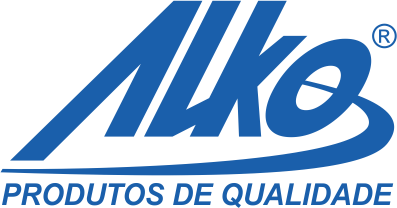

Plásticos Alko LTDA
07/07/2024 até 17/03/2025
Analista de infraestrutura de TI Senior
- Manutenção de desktop e servidores (Hardware)
- Instalação, configuração e administração de servidor AD
- Instalação, configuração e administração de servidor DHCP (AD)
- Instalação, configuração e administração de Antivirus (Kaspersky)
- Instalação, configuração e administração de servidor DNS (Pi-hole)
- Instalação, configuração e administração de firewall (Draytek e Cisco)
- Instalação, configuração e administração de switch (Draytek, Cisco, HP)
- Instalação, configuração e administração de roteadores (Cisco)
- Instalação, configuração e administração de Acess Point (Intelbras)
- Atuação total na infraestrutura de rede (Cabeamento, Vlan, topologias)

V.TAL - Rede Neutra de Telecomunicações S.A
21/06/2022 até 10/01/2024
Analista de field services Junior
- Manutenção de desktop e servidores (Hardware)
- Instalação, configuração de dominio
- administração de servidor DHCP (AD)
- Instalação, configuração de Antivirus (Crowstrike)
- Instalação, configuração de Acess Point (Cisco)
- Programação de softwares departamental (Javascript)
- Programação de automações (Javascript, Python e Power app)
- Instalação, configuração sistea de vídeo conferência (Cisco)
Bem Fibras Comercio de Suplementos LTDA
13/01/2021 até 05/05/2021
Analista de infraestrutura de TI Senior
- Manutenção de desktop e servidores (Hardware)
- Instalação, configuração e administração de servidor AD e cloud AD (AWS)
- Instalação, configuração e administração de servidor DHCP (PFsense)
- Instalação, configuração e administração de Antivirus (Avast)
- Instalação, configuração e administração de servidor DNS (PFsense)
- Instalação, configuração e administração de firewall (PFsense)
- Instalação, configuração e administração de switch (Fortnet)
- Instalação, configuração e administração de roteadores (HP) e Acess Point (Intelbras)
- Atuação total na infraestrutura de rede (Cabeamento, Vlan, topologias)
- Programação de site (Javascript)
Fast Shop SA
13/01/2021 até 05/05/2021
Analista de infraestrutura de TI Senior
- Suporte a windows (configuração)
- Suporte a equipamentos smart e android
Vikstar (vivo)
13/01/2021 até 05/05/2021
Analista de infraestrutura de TI Senior
- Suporte a windows (configuração)
- Suporte a equipamentos smart e android